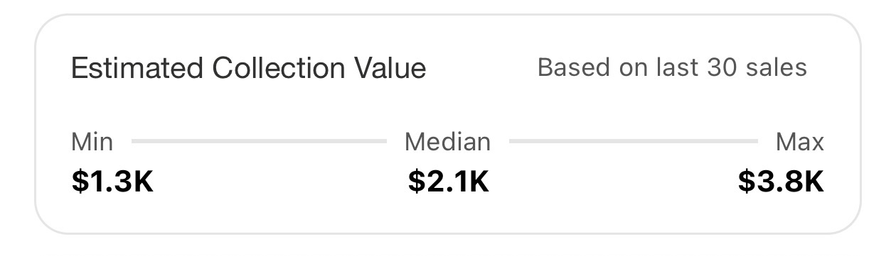
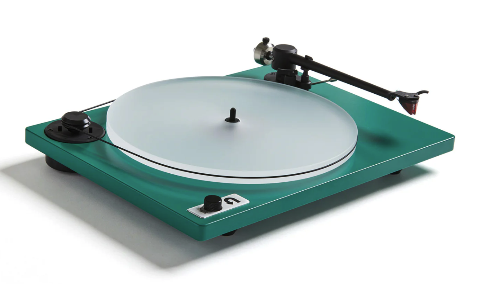

My name is Gavin, and I am a 17 year old high school student. Online I commonly go by RawCannedSushi or just Sushi. I have been collecting records for about a year now, but have been in the audio game for much longer. I have spent countless hours researching, learning, and testing out different audio setups in order to achieve the highest quality possible- vinyl being my newest venture. My record collection information can be found on my Discogs profile.


For digital audio, I currently run Sennheiser HD600s with a Fiio K11 desktop amp for my digital audio experience. For vinyl- which this whole site it about- I current run a U-Turn Orbit Special 2 with an Ortofon 2M Red cartridge, a Fosi Box X5 pre-amp, a cheap little speaker amp I found on sale, and some Polk audio bookshelf speakers + a Polk audio subwoofer. Attached picture is a photo of the turntable I use.
I have tons of experience with digital audio. I own tons of pairs of headphones, tons of IEMs, and can perfect my EQ in minutes. I own DACs, AMPs, DAPs, and anything I could ever need for digital audio. Though, with all of that, I've hit my endgame. I just dont think there is anymore I could do for digital audio. But thats hwen I learned about the modern vinyl collecting scene. Constantly striving for perfection with the most analog form of music there is. The soundwaves carved into a piece of plastic, the feeling of holding the music you own. The warmer sound coming through my speakers, the social aspect where me and my friends hang out and listen to music. You also cant forget the little dopamine rush that hits while I watch my little discogs collection value number tick up as I buy more and more music I love. Physical media is also the best way to support the artists I love. After writing a paper on streamings effects on the music industry, I know now more than ever that streaming does not do practically anything for smaller artists. If you dont have numbers in the near millions across multiple platforms, you arent making it. Spotify pays $0.002 per stream, the $30 I spend on a vinyl is likely more than 5000 streams worth of revenue. And I'm happy about that.